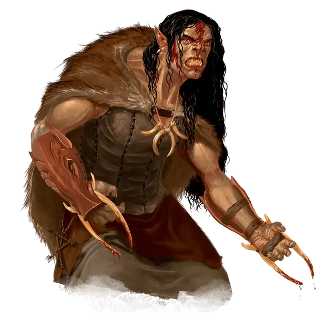

Отшельник Талоса
Anchorite of Talos
Средний Гуманоид (Полуорк, Перевертыш), нейтрально-злой

Класс Доспеха 13 (шкурный доспех)
Хиты 58 (9к8 + 18)
Скорость 30 футов
| мод | спас | ||
|---|---|---|---|
| СИЛ | 16 | +3 | +3 |
| ЛОВ | 13 | +1 | +1 |
| ТЕЛ | 14 | +2 | +2 |
| мод | спас | ||
|---|---|---|---|
| ИНТ | 9 | −1 | −1 |
| МДР | 15 | +2 | +2 |
| ХАР | 12 | +1 | +1 |
Навыки Выживание +4, Природа +1, Скрытность +3
Чувства тёмное зрение 60 футов, пассивное Восприятие 12
Языки Общий, Орочий
Опасность 3 (700 опыта)
Бонус мастерства +2
Особенности
Перевертыш. Отшельник может действием превратиться в кабана или принять свой истинный облик гуманоида. Все его статистики кроме размера остаются одинаковыми во всех обликах. Все несомое и носимое им снаряжение не превращается. Он принимает свой истинный облик, если умирает.
Врождённое колдовство. Базовой характеристикой отшельника является Мудрость (Сл спасброска от заклинаний 12). Отшельник может накладывать следующие заклинания без использования материальных компонентов:
• 3/день: волна грома [thunderwave] (2к8 урона).
• 1/день каждое: гадание [augury], благословение [bless], молния [lightning bolt] (8к6 урона), возрождение [revivify].
Действия
Перчатки с когтями (только в облике Гуманоида). Рукопашная атака оружием: +5 к попаданию, досягаемость 5 фт., одна цель. Попадание: 5 (1к4 + 3) рубящего урона.
Бивни (только в облике Кабана). . Рукопашная атака оружием: +5 к попаданию, досягаемость 5 фт., одна цель. Попадание: 6 (1к6 + 3) рубящего урона.
Описание
Эти религиозные отшельники получают магические силы от бога бурь Талоса, Штормового Лорда. Их человеческие предки породнились с орками, и теперь все отшельники Талоса - полуорки.